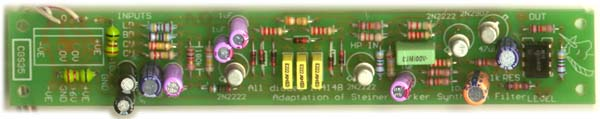
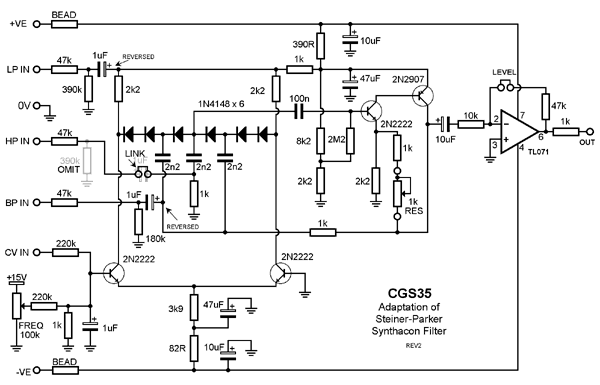
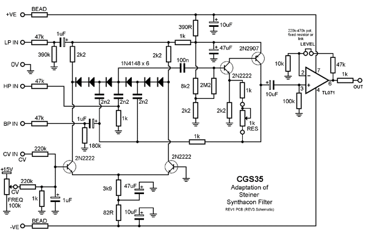
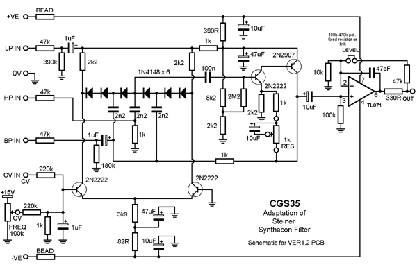
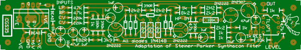
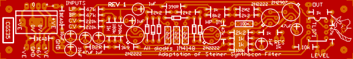
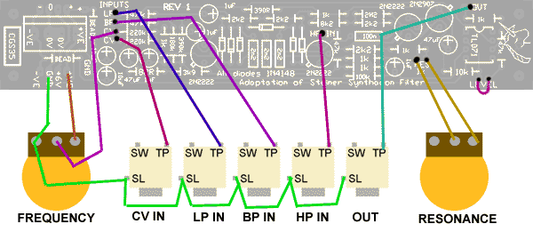
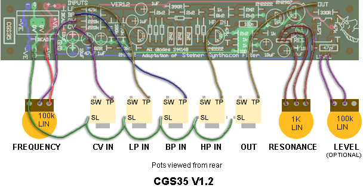

|

Documents for current version:
Synthacon VCF
for music synthesizers.
This module is a "tribute" module, based on the awesome Steiner-Parker Synth VCF. Those who know me will know I'm not a big VCF fan. Nonetheless, this VCF really appeals to me. Its sound is quite unlike the Moog ladder, has a lot of character.
Resonance is a bit unusual in its behavior. Once it starts oscillating, the resonance pot needs to be backed off a fair way to get it to stop again. It can also be frequency dependent.
How to use this module:
Connect the CV input to a voltage source such as a keyboard, envelope generator or sequencer. Connect the output to a VCA or amplifier. Feed the signal to be filtered into the high-pass, band-pass or low-pass input.
Unlike the original, this version allows signals to be fed into all inputs simultaneously. If the same signal is used in all inputs, the result is reminiscent of a phaser. The real fun starts when you feed different signals into each input, then you get a frequency based "interpolating scanner", where panning between different sound sources is possible, though also subject to the frequency at which they are running. I have never heard an effect like it before.
A little on how it works:

The schematic of the first Synthacon VCF PCBs.

The schematic of the pre 2010 Synthacon VCF PCBs.

The schematic of the Ver1.2 (2010) Synthacon VCF PCBs.
The circuit uses a standard, non-inverting amplifier configuration. The three modes (HL, BP, LP) are obtained by injecting the signal into three different points of the circuit. An increase in the gain of the amplifier increases the filter's Q. The Q remains almost constant as the filter is swept across the audio spectrum.
In the circuit, diode strings are used as voltage controlled resistors. The differential-amplifier transistors apply the bias voltage to the parallel diode string RC networks in opposing phase. The opposing phases cancel the control voltage so that none appears at the output.
The final pair of transistors form a non-inverting amplifier. The variable resistor adjusts the gain of this amplifier, and thus its Q.
The final stage is a simple gain stage, as I found the original was too quiet for my needs. In the first version of the PCB, this stage was inverting, while on the Rev 1 PCBS, this stage is non-inverting. The LEVEL pads are to allow for a level pot to be installed. Use a pot with a value of 50k or 100k (going even higher if needed, e.g. 250k), depending on the overall gain required. Alternatively, a fixed resistor could be put here, or even a link, if the 47k in series with it is increased to compensate.
Note that the level pot does NOT allow the output to be reduced to zero, as this is impossible to do with a variable resistor in the feedback circuit of a non-inverting buffer. It will adjust the gain from the default 5:1 up to 15:1 assuming a 100k pot is used, effectively allowing you vary the output from standard to three times that level.
(Based on an article by Nyle Steiner from Electronic Design 25, Dec 6th, 1974.)
Construction


The component overlay. Connections can be determined from the circuit diagram. The earlier board is shown in green, while the Rev 1 board is shown in red.
Construction Notes/modifications:
- The following four point apply only to the VERY early PCB runs, and are here only as a reference to those with these old PCBs. REV 1, VER1.1 and later boards can be built as per the overlay.
- (historical) On the first run of the PCBs, the TL071 is incorrectly labeled as a TL072. Only 10 of these boards were made.
- (historical) On both the first and second runs of the PCBs, there are also some suggested changes: the input electros are backwards in my design. It would seem I put them on the wrong side of the input dividers! This affects the three 1uF input capacitors.
- (historical) On both the first and second runs of the PCBs, the 10uF between the output transistors and the input of the op-amp buffer is correct on the circuit diagram, and reversed on the PCB. Please install it backwards with respect to the PCB artwork. It can't have been my day...
- (historical) The next modifications actually removes the input capacitor in the HP input. Put a link there instead. Also, do not install the associated 390k pull-down resistor (leave empty) on the High Pass input.
- The REV 1, VER1.1 and later boards can be built as per the overlay. They have none of the above issues.
- On some older boards (Rev 1?) there is a coupling capacitor that differs from that specified on the schematic (1uf/10uF). Either value will work.
- You may find that the levels and responce to the CV vary depending on the transistors used. As such, the "tweak" values given may not be appropriate for your filter. Do not be afraid to experiment.
- All pots are linear.
- The 2N2222 and 2N2907 were chosen as they had gains closer to those used in the original design than other frequently used transistors such as the BC547. 2N3904 and 2N3906 have been successfully used, though they need to be installed "backwards" with respect to the transistor outlines on the PCB.
- As the resonance is increased, the gain also increases. depending on the input signals, clipping may occur. Some experimenters may wish to try using the level pads in combination with the resonance to keep the output level constant. Due to the somewhat large differences between the values of the required pots, I will leave the details of how to achieve this to those game enough to tackle it.
- If you have inadequate output from the filter, try increasing the value of the feedback resistor of the op-amp.
- The 1uF capacitor at the summing point of the CVs will cause it to slowly drift, due to the charging curve of the RC network. With fast changing CVs this is not an issue, but if you want it to hold a constant frequency, it can be annoying. This capacitor was in the original design, presumably to de-thump the filter. I see no problem with leaving it out if you have this sort of problem.
- When using 2N3904 and 2N3906 I had to tweak the 2k2 in the resonance part of the circuit (connected to the emitter of the NPN in the amplifier) to compensate for transistor gain. A 15k across it brought it to the point where with the resonance full up, it was slightly ringing. A signal on the HP or LP inputs would then send it onto full oscillation, requiring the resonance to be backed right off to stop it, which is normal behavior for this design.
- Depending on transistor gain, the frequency range may be covered by knob positions 0 through 5. See John's notes below if this bothers you. On the other hand it is useful to leave it this way if you plan to use it with voltages that swing negative, as it allows you to offset the center frequency to compensate.
- A 10 to 22 ohm resistor can be used instead of the ferrite beads. If you don't care about power-rail noise, just use a link instead.
- Frequency response to CV is exponential.
Before you start assembly, check the board for etching faults. Look for any shorts between tracks, or open circuits due to over etching. Take this opportunity to sand the edges of the board if needed, removing any splinters or rough edges.
When you are happy with the printed circuit board, construction can proceed as normal, starting with the resistors first, followed by the IC socket if used, then moving onto the taller components.
Take particular care with the orientation of the polarized components, the electrolytics and IC and transistors.
When inserting the IC in its socket, if used, take care not to accidentally bend any of the pins under the chip. Also, make sure the notch on the chip is aligned with the notch marked on the PCB overlay.
A pair of pads is provided to allow the fitting of an output level pot. Something like 50k to 100k would be appropriate. The associated 47k resistor can be replaced with a link. If you do not require the level control, these pads MUST be linked together.
Early versions

|
(historical) An example of how to wire the earlier versions up. Which positive (+, +VE) and ground (GND) pads are used to connect to the frequency pot and jack earths is not important. The +6V pad is not used at all - no 6 volt supply is required - it is merely a pass-through for systems that do require 6 volts. If the resonance pot behave backwards to your requirements, swap the wire on the outer edge of the pot to the opposite side. If a level pot is required, wire it in exactly the same way as the resonance pot.
|
Version 1.2

|
An example of how to wire the VER1.2 board up. Which positive (+, +VE) and ground (GND) pads are used to connect to the frequency pot and jack earths is not important. If the resonance pot behave backwards to your requirements, swap the wires on the outer edge of the pot with each other. If a level pot is not required, put a link or fixed resistor in its place. See the text for the value of this resistor.
|
|
(historical) Notes from John Loffink, referring to earlier versions:
To recap, I built my Steiner VCF and noticed that the entire frequency range
was covered by knob positions 0 through 5. I also wanted the direct control
voltage input to track to approximately 1 V/octave. Here are the tweaks I
did to bring this circuit up to snuff. Your circuit may vary, so proceed
with caution if changing anything from the nominal values recommended by
Ken.
Output "level" jumper/resistor: I put 180K in the level position, in
addition to the 47K already in the op amp feedback path, or just put 220K
total in the 47K position. This gave the maximum resonant oscillation
amplitude without clipping and brought the normal non-oscillating output to
a better level.
FREQ knob adjustment. As stated, my original range of 0 to 5 (out of 10)
covered 20 Hz to 20 KHz. There are two resistors to adjust for this.
First, decreasing the size of the input divider resistor on the CV input
section, 1K in Ken's circuit, increases the range of the frequency control.
I put 2.2K in parallel with the 1K resistors, or you can swap the 1K with a
680 ohm resistor. Note that this also affects the Control voltage inputs,
so they will need to be adjusted. I also added 220K of series resistance to
the FREQ knob. This tends to center the frequencies on the FREQ knob so 200
Hz is near the center. With these values the knob range 0 to 10 sweeps
approximately 5 Hz to 25 KHz. This was measured by putting 20 Hz and 20KHz
sine waves into the LPF input and measuring the amplitudes at min and max
FREQ positions. I also tested audibly using white noise as an input.
I wanted my direct CV input (no knob) to sweep approximately 1 V per octave.
Just realize that the tracking on this filter is not that accurate. I
measured this by putting the filter into self oscillation and reading the
frequency with a frequency counter. Note that the filter oscillates from
about 200 Hz to 6.5 KHz, so that's the only range that was measured. For
this adjustment I added 148K in series to the existing 220K input resistor,
or just exchange the 220K input resistor with a 360K. Note this setting is
dependent upon the above mentioned input resistor divider modification.
For the attenuated CV input, I wanted a 5 volt MOTM envelope to sweep the
entire frequency range. In the original circuit the range was fine, but
when I changed the CV input resistor divider the range became too small.
This requires decreasing the size of the input series resistor from the pot
wiper. In Ken's circuit it is 220K, I put 300K in parallel, or just swap
the 220K resistor with a 120K resistor.
This is a great filter, by the way, with lots of character. It sounds very
Moog ladderish with the low pass input, and mixing VCOs into the LP, HP and
BP inputs gives some great effects.
|
Notes:
- PCB info: 6" x 1" with 3mm mounting holes 0.15" in from the edges.
- Please email me if you find any errors.
| Part | Quantity |
| Capacitors |
|---|
| 47pF | 1 |
| 2n2 | 3 |
| 100n | 1 |
| 1uF 35V | 4 |
| 10uF 35V | 4 |
| 47uF 25V | 2 |
| Resistors |
|---|
| 82R | 1 |
| 330R | 1 |
| 390R | 1 |
| 1k | 6 |
| 2k2 | 4 |
| 3k9 | 1 |
| 8k2 | 1 |
| 10k | 1 |
| 47k | 4 |
| 100k | 1 |
| 180k | 1 |
| 220k | 3 |
| 390k | 1 |
| 2M2 | 1 |
| 1k lin pot | 1 |
| 100k 25 turn trim | 1 |
| 100k lin pot | 1 (2) |
| Semi's |
|---|
| 1N4148 | 8 |
| TL071 | 1 |
| 2N2222 | 3 |
| 2N2907 | 1 |
| Misc. |
|---|
| Ferrite Bead (or 10R resistor) | 2 |
| 0.156 4 pin connector | 1 |
| CGS35 Ver1.x PCB | 1 |
|
|
Parts list
This is a guide only. Parts needed will vary with individual constructor's needs.
This list covers all versions. If you buy all of the parts, there will be some left over after you complete your PCB.
If anyone is interested in buying these boards, please check the PCBs for Sale page to see if I have any in stock.
Can't find the parts? See the parts FAQ to see if I've already answered the question. Also see the CGS Synth discussion group.
A demo on youtube. (attorks)
Article, art & design copyright 2001 by Ken Stone
Modular Synth Home Disclaimer
|